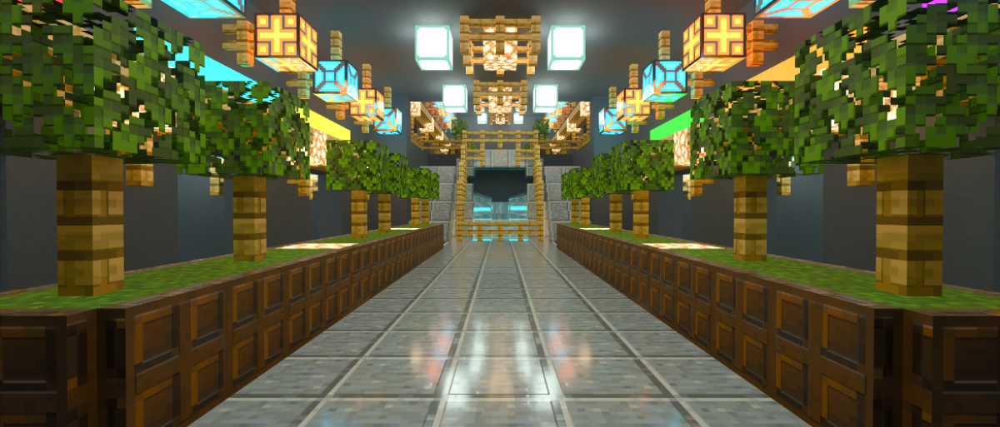
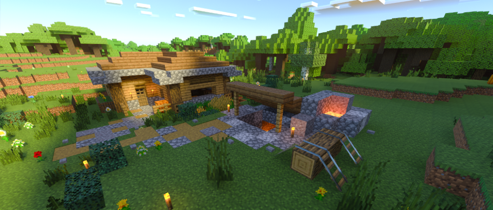

THE END OF THE PATH?
Welcome back, adventurers! (In case you’re just joining us, catch up to where we’ve been in weeks one and two.)
And now we reach our final roundup destination. This tree-lined hallway could lead to (or away from) a lush garden, a glamorous palace structure, a futuristic lab or even an underground bunker keeping the last bits of civilization safe from the apocalypse above. Who knows for sure? All we do know is the trees have planted themselves within our imagination, and are ready for us to write the rest of the story when we have a moment. Portal_Jumper_79 also shared a couple of other builds with us to fire up our imaginations! It has been a couple of weeks now since we started wandering together, but it doesn’t have to end just yet! Let’s take a look at a few more things created by the rest of the community before you close this page and begin your own Minecraft adventure.
Have you been inspired by some of the screenshots and locations you’ve seen here? Now it’s time to tell your story. If you’ve built something you’d like us to include in a future roundup, submit some screenshots and info about it to FeatureMe@minecraft.net! We can’t wait to see what you create as we head into the new year!
MINECRAFT CAMP
This corner of the Overworld was created using the RTX Beta for Windows 10. While we have shared a few selections before with more elaborate constructions, od149’s build shows how even an understated mine entrance and house can look different thanks to advanced graphic features. “It's my little survival house in my friend's world. I built it around the thought of how it would look in RTX, and it turned out really nice,” commented od149.
If you’re interested in creating some Minecraft with ray tracing content of your own, check out the FAQ for more information. Once you’ve made something, feel free to send your excellent work of art over to FeatureMe@minecraft.net to get featured in a future community gallery or tag us on social media with #FeatureMeMinecraft. Be sure to share additional information about your build so that we can include it with your screenshots. We can’t wait to see what you create and look forward to sharing more community builds brought to life with our ray tracing and advanced graphics features soon!